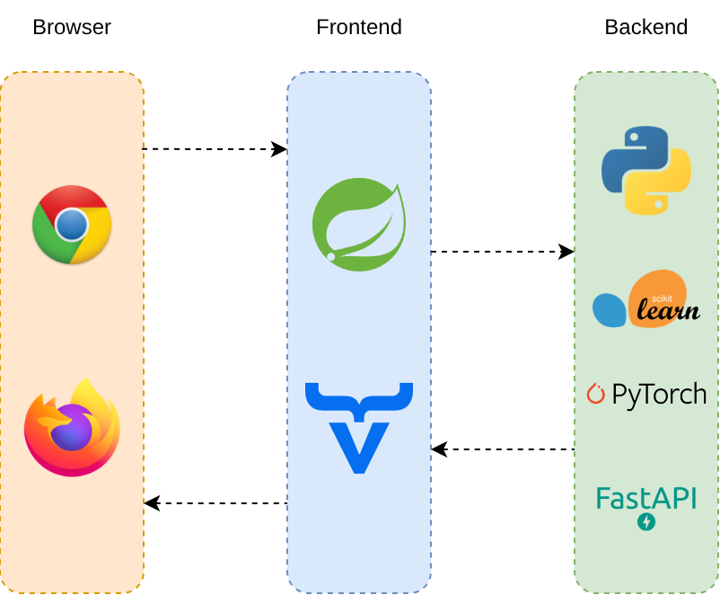

💧 Project Overview
Water Safety Plans depend on interpreting monitoring information and deciding where attention may be needed. This master's project explored how machine-learning methods could add analytical tools to that process, bringing several forms of analysis together in an application for water-safety planning.
The application is intended as decision support, not as an automated replacement for risk assessment or professional judgement. It provides ways to explore patterns and possible future trends alongside planning-oriented tools.
🏗️ System Architecture
The project follows a browser-based, multi-layer structure. A Vaadin frontend, built on Spring, provides the interface; it communicates with a Python backend through REST services. The backend brings together data preparation, machine-learning analysis, and planning functions.

🧩 Project Modules
1. Exploratory Clustering
Groups monitoring locations with similar chemical profiles, helping users explore patterns across a network. Several clustering approaches were considered; the resulting groups are presented as exploratory evidence, not as a definitive classification.
2. Time-Series Forecasting
Studies historical measurements to estimate future trends. Statistical, gradient-boosting, and neural approaches were explored, including SARIMAX, Prophet, LightGBM, and Kolmogorov–Arnold Networks (KAN). Forecasts are intended to complement, rather than replace, existing risk-assessment practices.
3. Sampling-Route Prototype
A routing prototype explores how visits to sampling locations can be organized across multiple vehicles. It uses road-network information and Google OR-Tools to generate routes, with map-based outputs for review.
🛠️ Technology Stack
🔎 Scope and Limitations
The clustering component is exploratory, some forecasting approaches require further evaluation, and the routing component remains a prototype. The project brings these capabilities into one application to make the analyses easier to explore; it does not claim that they independently establish water safety or replace expert review.
Industry confidentiality: This page describes the architecture and methods at a portfolio level. It does not disclose protected datasets, site details, operating criteria, or private evaluation results.